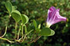
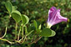

Synonymes : Ipomoea biloba Forssk.; Convolvulus pes-caprae L.
Common name : Goat's foot creeper
Common name in Tamil : Adapu kodi, adambu
Common name in Telugu : Chevulapilli theege
 

Diagnostic characters
Botany & morphology
Regeneration
Ecology
Distribution
Prostrate herb in seashore, rooting at the nodes. Leaves deeply 2-lobed. Flowers purple-red or pink and funnel shaped; fruit capsule, ovoid.
Leaves simple, alternate, apex deeply 2-lobed, base truncate, margin entire, 2 - 3 x 5 - 6 cm.
Flowers solitary, axillary, showy pink; calyx 5, persistent; corolla campanulate; stamens 5, included, filaments filliform or dilated below, anthers straight or contorted; ovary 2-celled, style filiform, stigma bifid and capitate.
Fruits capsule ovoid, glabrous, seeds brown, velvety.
Adventitious roots develop from each node.
Epigeal or modified epigeal germination; seeds are dispersed by sea currents.
Common on sandy beaches and dried river-beds.
Throughout tropics.
Top of the page